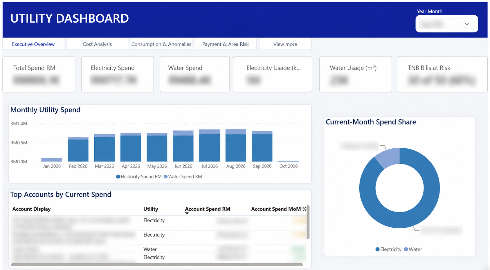
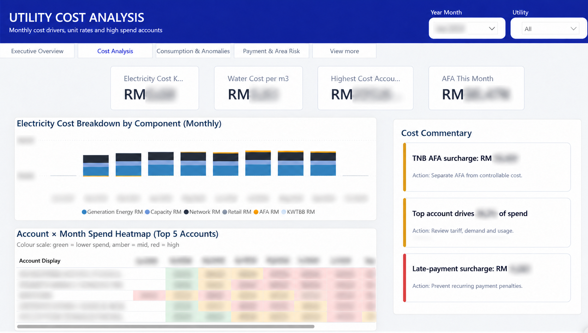
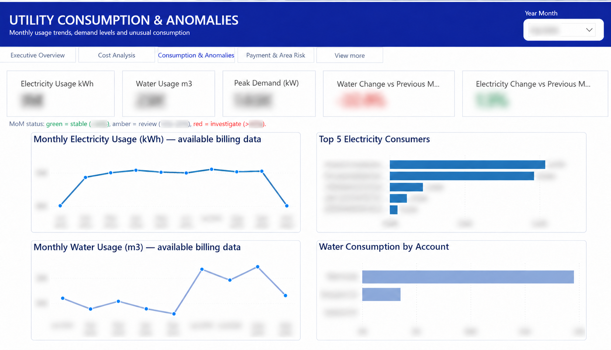
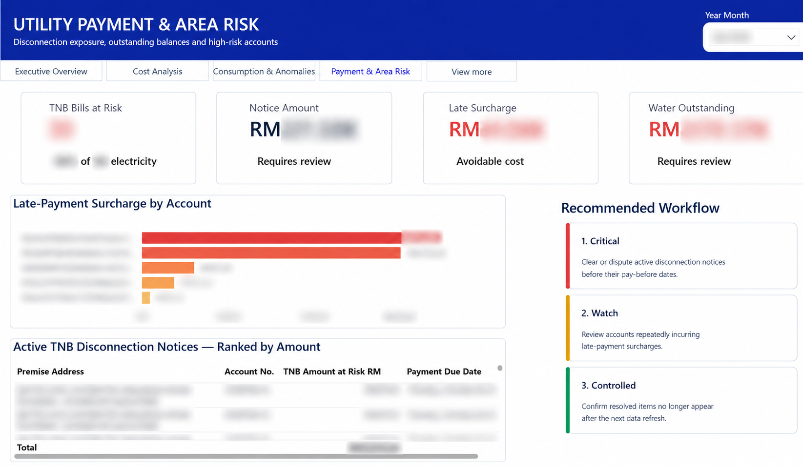

Use Google Sheets data
The report uses Google Sheets as its data source, bringing the underlying utility records into the reporting workflow.
Case study / Business intelligence
Bringing electricity and water reporting into one Power BI experience, from costs and consumption to payment risk and DAX-generated insights.

01 / The purpose
I built this Power BI dashboard using data sourced from Google Sheets and created the insight commentary using DAX.
The report brings electricity and water reporting into a structured interface. It covers utility spending, consumption patterns, account-level comparisons, and payment-risk indicators across four reporting views.
Google Sheets provides the source data used in the Power BI report.
Costs, consumption, anomalies, and payment-risk reporting.
02 / My approach
The report uses Google Sheets as its data source, bringing the underlying utility records into the reporting workflow.
I developed the dashboard in Power BI with an executive overview and dedicated views for costs, consumption and anomalies, and payment and area risk.
I used DAX to create the insight commentary displayed in the report. These panels provide written context alongside the charts and indicators.
03 / Dashboard gallery
Explore the report’s cost, consumption, and payment-risk views. Select any screenshot to open the full image in a new tab.
A consolidated view of electricity and water spend, usage, current-month spend share, and account-level costs.

Cost components, account-by-month spend patterns, and DAX-generated commentary highlighting cost drivers.

Electricity and water usage trends, peak demand, month-on-month changes, and account-level consumption comparisons.

Bills at risk, outstanding balances, late-payment surcharges, and recommended follow-up actions in a dedicated reporting view.
Figures and identifying account details are blurred for portfolio presentation. The screenshots show the report layout and analytical features.
04 / What I delivered
Google Sheets source data used in a Power BI dashboard.
Executive, cost, consumption, and payment-risk perspectives.
Written reporting context presented alongside the visuals.
See my portfolio for projects in data engineering, analytics, and reporting automation.